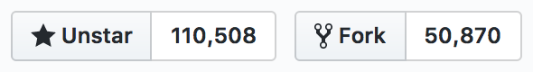

# Bootstrap Workshop Sarah Sachs [bootstrap.gdicincy.com](http://bootstrap.gdicincy.com/) [/exercises](https://github.com/zarahzachz/gdi-cin-bootstrap/tree/master/exercises)
## Welcome Girl Develop It is here to provide affordable and accessible programs to learn software through mentorship and hands-on instruction. Some "rules": - We're here for you - Every question is important - Help each other - Have fun!
## Welcome Tell us about yourself. - Who are you? - What do you hope to get out of the class? - Who's your favorite superhero?
## What we'll be covering today 1. Basic setup 2. Using the grid 3. Creating custom components 4. Working with pre-made components 5. Adding custom CSS ⏰ *If we have time* - we'll play with some JavaScript plugins
## What we won't be covering today 1. Bootstrap theming 2. How to use every single Bootstrap feature 3. Overriding Bootstrap's CSS 4. How to use any CSS preprocessor
## What is Bootstrap? > Bootstrap is the most popular **HTML, CSS, and JS framework** for developing **responsive**, **mobile first** projects on the web. <p class="attribution">-- Bootstrap</p>
## What is Bootstrap? <dl> <dt>HTML, CSS, and JS framework (aka <em>Front-end framework</em>)</dt> <dd>A collection of production-ready HTML/CSS/JavaScript components you can use with little configuration.</dd> </dl>
## What is Bootstrap? <dl> <dt>Responsive</dt> <dd>A design approach, specifically for the Web, allowing a single webpage to be viewed in response to the size of the screen/web browser it's being view with.</dd> </dl>
## What is Bootstrap? <dl> <dt>Mobile first</dt> <dd>When building a webpage, you begin with mobile considerations and work up to a larger desktop version.</dd> </dl>
## Why Bootstrap? - It was created by Twitter devs (smart people!) - It [looks pretty slick](http://builtwithbootstrap.com/) - It's [battle-tested](http://getbootstrap.com/browser-bugs/) - It's *really* popular
## Why Bootstrap? Bootstrap is one of the most popular front-end frameworks, with 110,000+ stars and 50,000+ forks on Github.  It's an open source project on Github, meaning it's free to use and anyone can contribute to it.
## Let's get started To get started, visit [getbootstrap.com/get-started](http://getbootstrap.com/getting-started/)
## Setting up Bootstrap There are a few ways you can go about adding Bootstrap to your project. For this class, we'll be [downloading](http://getbootstrap.com/getting-started/#download) it. This method allows you to see the nuts and bolts that make up the framework, giving you a better understanding of what Bootstrap has to offer.
## 🛠 Let's develop it! Download Bootstrap to the directory of your choice. 🚨 *Hint: The work we do in today's workshop will be done in this directory - so remember where you put it!*
## What's included? <div style="float: left;"> <img src="assets/bootstrap-directory.png" alt="bootstrap directory structure"> </div> <div style="float: right; width: 60%;"> <p class="fragment">Note that the <code>css/</code> folder includes two similarly-named files:</p> <p class="fragment"><code>bootstrap.css</code> includes the basics like layout styles, media queries for the grid, etc.</p> <p class="fragment"><code>bootstrap-theme.css</code> includes more stylistic styles, i.e., font-faces, colors, etc.</p> </div>
## HTML template Bootstrap provides us with a basic template to set up a project quickly and correctly. Click [here](http://getbootstrap.com/getting-started/#template) to see/use this template. This template has a few new additions you *might* not be familiar with.
## The Responsive Meta Tag This meta tag lives in the `<head>` and will make your site responsive. ``` <meta name="viewport" content="width=device-width, initial-scale=1"> ```
## Using Javascript And if you want to use any of Bootstrap's JavaScript components, you **have** to have Jquery installed *before* any other JS library. This template is using a CDN to load Jquery for us. ``` <script src="https://ajax.googleapis.com/ajax/libs/jquery/1.12.4/jquery.min.js"></script> ```
## 🛠 Let's develop it! In your project folder, create a new HTML file and wire it up to use Bootstrap. 🚨 *Hint: Be sure the **minified** CSS and JavaScript are in the right spots!*
## The Grid The grid layout is probably *the* most important feature of this framework. Bootstrap uses a combination of containers, rows, and columns to achieve its grid layout.
## .container vs. .container-fluid `.container` is a fixed-width container `.container-fluid` is a full-width container Containers are used to "contain" the contents of your site. They ensure your content is properly aligned (centered) and add padding to it. You can have several of these classes on the same page, but **never** on the same element. [Example](http://codepen.io/zarahzachz/full/zwpxya/)
## Rows Rows create horizontal groups of columns. If you're planning on using columns, they **must** be nested within a `.row` element. On their own, `.row`s have a negative margin of about 15px. This is to account for the gutter surrounding the column elements. If you add columns without adding your row, your layout will look off. [Example](http://codepen.io/zarahzachz/full/ZKroJO/)
## Columns Bootstrap uses a 12-column grid system. Why 12? Because it's a pretty flexible number. It's easily divisible, allowing for a variety of layouts.
## Columns <img src="assets/column-space.png" alt="Bootstrap's 12-col grid">
## Columns Bootstrap uses this naming convention in naming its column classes: | Device | Class | Container width | | --- | --- | --- | | Phones | `.col-xs-*` | None | | Tablets | `.col-sm-*` | 750px | | Small desktops | `.col-md-*` | 970px | | Large desktops | `.col-lg-*` | 1170px |
## The Grid Putting it all together: ``` <div class="container"> <div class="row"> <div class="col-sm-6">...</div> <div class="col-sm-6">...</div> </div> </div> ``` [Example](http://codepen.io/zarahzachz/full/aWqGyw/)
## The Responsive Grid Unlike the container classes, Bootstrap's column classes can be stacked onto the same element. This allows you to create different layouts based on the width of the device! ``` <div class="container"> <div class="row"> <div class="col-xs-1 col-sm-6 col-md-2 col-lg-4">...</div> <div class="col-xs-11 col-sm-6 col-md-10 col-lg-8">...</div> </div> </div> ``` [Example](http://codepen.io/zarahzachz/full/gWKVjo/)
## The Responsive Grid So how does Bootstrap accomplish this? Through the use of **media queries** and some pretty complex math in its CSS. You can open `bootstrap.css` [line 1615] and check them out for yourself.
## 🚨 Layout Gotchas Your rows should *always* add up to 12. If more than 12 columns are in a row, each group of extra columns will wrap onto a new line. Bootstrap will assume columns are 12-columns wide unless indicated otherwise. (That whole **mobile-first development** thing.) ``` <div class="container"> <div class="row"> <div class="col-md-4">...</div> <div class="col-md-4">...</div> <div class="col-md-4">...</div> </div> </div> ``` Note: In this example, Bootstrap will assume your layout is 12-columns wide for mobile and tablet-sized devices, then break into 3 columns on small desktop screens. Just imagine that there's invisible classes for mobile and tablet screens telling each `div` to be 12-columns wide.
## 🛠 Let's develop it! Using [CSS](http://getbootstrap.com/css/) helper classes, create a "feature card" section that responds to the browser's width. 1. Create a `<section>` containing 3 `<div>` elements. 2. In each `<div>`, add a **circular** image. 3. Place a **header** (centered) beneath that image. 4. Each `<div>` should be full-width on mobile screens, and move inline (i.e., 3 `<div>`s in 1 row) on tablet-sized screens. 🚨 *Hint: Use Bootstrap's `center-block` helper class to help center your "feature cards".*
## Offsets <p>Q: But what if you don't have 12-columns worth of content!?!</p> <p class="fragment">A: Bootstrap has column offsets that allow you to adjust the margins of your columns!</p> ``` <div class="container"> <div class="row"> <div class="col-lg-4 col-lg-offset-4">...</div> </div> </div> ``` Note: In this example, `col-lg-offset-4` is adding 4 columns' widths of margin to **both sides of your content**. So technically, this row still adds up to 12!
## Offsets Bootstrap provides an override class in the instance you want to remove an offset from a particular screensize. This class is called `.col-*-offset-0` ``` <div class="container"> <div class="row"> <div class="col-xs-6 col-sm-4">...</div> <div class="col-xs-6 col-sm-4">...</div> <div class="col-xs-6 col-xs-offset-3 col-sm-4 col-sm-offset-0">...</div> </div> </div> ``` Note: Here, we have 3 `div`s of content that change layout based on screensize. On mobile, the top 2 `div`s are side-by-side and the last 1 is centered horizontally. On tablets, this layout shifts so all 3 are on the same row. Because Bootstrap is **mobile-first** you have to include `.col-sm-offset-0` to prevent that margin change seen in the mobile-view from bubbling up in screensize.
## 🛠 Let's develop it! 1. Under the closing `</section>` of the previous exercise, create a new `<section>` for the "About Me" part of your website. 2. Include a **header** and short **paragraph** of text, centered horizontally. 3. Add offsets to center the content better on small-large desktops.
## Nesting Q: But what if your layout requires more granular control of its columns!?! <p class="fragment">A: With nesting, your columns can get as precise as you need! To nest your columns, you add a new `.row` inside your column of choice and from there, add the number of columns you want.</p> ``` <div class="container"> <div class="row"> <div class="col-md-8"> <div class="row"> <div class="col-sm-6 col-md-3">...</div> <div class="col-sm-6 col-md-9">...</div> </div> </div> <div class="col-md-4">...</div> </div> </div> ```
## 🛠 Let's develop it! Under the closing `</section>` of the previous exercise, we're going to add the basic markup for a contact form. (*Note that there won't be any functionality to this.*) 1. Create a new `<section>` and give it a centered **header**. 2. Add your **form** element. Your form should have a field for a first name, last name and email address. 3. Add a **submit button** under your form.
## Reordering Columns Q: What if the order of your content makes sense on mobile screens, but looks wackadoo on desktop-sized screens!?! <p class="fragment">A: Bootstrap has classes onhand to help you reorder the position of your columns with a couple modifier classes!</p> <p class="fragment">The "push" class shifts your column right by the number of columns indicated. The "pull" class shifts it left by the number of columns indicated.</p> ``` <div class="container"> <div class="row"> <div class="col-md-9 col-md-push-3">...</div> <div class="col-md-3 col-md-pull-9">...</div> </div> </div> ```
## 🛠 Let's develop it! We're going to play around with reordering the feature cards we created for Exercise 2. 1. Using the column reordering helper classes, switch the positions of the first and last feature card **for large screens only**.
## Components Components are reusable "chunks" of code you can slip into your project. There's very little need for configuration outside of customization, and there's a wide array of common *UI* (user interface) options to choose from.
## Navbar **Navbar** is a commonly used term in development that refers to a website's primary navigation. Navbars can have a variety of elements, from buttons to form fields to images. Bootstrap's navbars are built mobile-first (meaning they collapse to the popular hamburger icon on mobile).
## 🛠 Let's develop it! Visit [Default navbar](http://getbootstrap.com/components/#navbar-default) 1. At the top of your website (under the opening `<body>` tag), paste the code for the **Default navbar**. 2. Edit the **markup** (HTML) to have 5 links placed in any configuration you want (left or right).
## Jumbotron The **jumbotron**, also referred to as the **hero image** of a site, is usually the first section you see on many traditional websites. It's characterized as a component that takes up a lot of space (usually full-width), and often features text or some kind of **call-to-action** (CTA).
## 🛠 Let's develop it! Bootstrap's [Jumbotron](http://getbootstrap.com/components/#jumbotron) comes in two flavors: full-width and not full-width. 1. Under your closing `</nav>` tag, paste the code for the **Jumbotron**. (*Because our navbar is full-width, it would be nice to have a full-width jumbotron.*) 2. Include a headline and short sentence inside your jumbotron. **Bonus points:** Add a CTA button!
## Thumbnails *Thumbnails* are a common component seen on many ecommerce-type websites. These elements consist of an image or video and are placed in a very structured grid pattern. Headers, text and even buttons can be added as well. [image of thumbnails]
## 🛠 Let's develop it! Visit [Thumbnails](http://getbootstrap.com/components/#thumbnails) For this excercise, we'll be adding 8 thumbnails to our site. 1. Create a new `<section>` under your feature cards (Exercise 2). 2. Add a centered **header**. 3. Add 8 thumbnails to this section (🚨 *Hint: The documentation might need some light configuration here*) 4. Thumbnails should each have an image, a header, and a button. We want to think **responsively**, so lay out your thumbnails in a user-friendly way. (🚨 *Hint: Use a few column classes here.*)
## Custom CSS You don't have to feel compelled to use Bootstrap's CSS. If there's something custom you want to add to your project, by all means feel free to do it! As Professor DePietro used to tell me, "There's more than one way to skin a cat!"
## Custom CSS To add custom CSS to your project, place a link *under* the minified Bootstrap CSS. HTML is read top-to-bottom, so your custom CSS will load *after* Bootstrap's. Example: ``` <head> <link href="css/bootstrap.min.css" rel="stylesheet"> <link href="css/custom.css" rel="stylesheet"> </head> ```
## 🛠 Let's develop it! 1. Add a custom stylesheet to your project. You can make any additions you want! Some examples can be: - Adjusting the margin/padding of your sections - Changing the fonts (family, size, color, etc.) - Add background images or colors
## JavaScript Components Similar to CSS, Bootstrap has preconfigured JavaScript components. To use, simply add the link to `bootstrap.min.js` *beneath* a link to Jquery. (Jquery is required for Bootstrap's JS to work.)
## Scrollspy Scrollspy is a fun JavaScript component that adds some neat animation effects to our navbar. It's fairly easy to implement and is the perfect component for beginners (i.e, you don't need to understand JavaScript to use it!)
## Scrollspy To use, add the appropriate markup to your `<body>` tag. Then add an `id` to your navbar. This `id` should match the value you put in the `data-target`. ``` <body data-spy="scroll" data-target="#custom-navbar-id"> <nav class="..." id="custom-navbar-id"> ```
## Scrollspy Scrolling to each section is as simple as adding `id`s to the sections you want to navigate to (and adding each `id` to your navbar's `href` value). ``` <nav class="..." id="custom-navbar-id"> ... <li><a href="#home">Home</a></li> ... </nav> <div id="home">...</div> ```
## 🛠 Let's develop it! Visit [Scrollspy](http://getbootstrap.com/javascript/#scrollspy) 1. Add Scrollspy to your website. 2. Add `id`s to each `<section>` you built. 3. Add each of these `id`s to your navbar. 4. Add a class of `.navbar-fixed-top` to your navbar. 5. Add custom CSS so the **padding** of each section looks right.